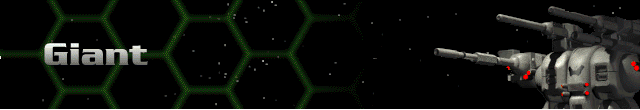
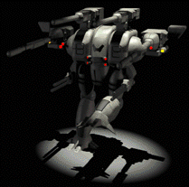

› |
› |
› |
› |
Giant |

|
Chassis: Giant The Giant is outfitted almost exclusively with ballistic (Cannon) weapons. It is best used in tandem with an energy-weapon Herc like the Ogre. Standard equipment: Standard Sensor 15.1 Amplitude, a Fission 200 reactor, Bertrand-Altase targeting computer, Shield 1200 shield class, Chemical 180 battery, Standard Life Support, 18cm armor, and a Pre-Flexive drive system. This specialized configuration enables the Giant to devote its energy to movement and still deliver a deadly attack. It is recommended that this Herc be used in tandem with those that attack with energy weapons. Available at Tech Level 1. |
 |
Max. Weapons Capabilities
These are all of the weapons which can be mounted to this Herc once you have reached all Technology levels through promotions.
| Energy | Missile | Cannon | Plasma | ELF | Adv. Tech. |
|---|---|---|---|---|---|
| Blast Mortar | 20mm Autocannon | Fusion Mortar | Lt. Particle Gun | ||
| 50mm Autocannon | Plasma Mortar | Med. Particle Gun | |||
| 30mm Chain Gun | Hvy. Particle Gun | ||||
| 40mm Ranger Cannon | Super Hvy. Particle Gun | ||||
| 90mm Accel. Cannon | |||||
| 120mm Autocannon | |||||
| 210mm X-HEAP | |||||
| 100mm Accel. Chain Gun | |||||
| Devastator | |||||
| 260mm Auto Mortar | |||||
| EF Cannon | |||||
| 200mm HEAP |